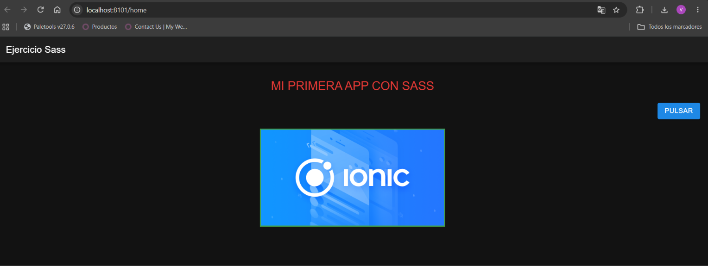

Proyecto ejercicio-sass · Módulo de Sass (M9) · Octubre 2026
Repositorio GitHub: https://github.com/delucasfernandezvictor-arch/Estilos-y-SCSS
| Requisito | Cómo se ha resuelto |
|---|---|
| 1. Crear un proyecto Ionic-Angular | ionic start ejercicio-sass blank --type=angular |
2. Página/componente home | La plantilla blank ya la genera: src/app/home/ |
| 3. Título + botón + imagen | <h1> e <img> (HTML) y <ion-button> (componente Ionic) |
| 4. Título rojo, mayúsculas, centrado | color, text-transform: uppercase, text-align: center |
| 5. Botón a la derecha en azul | Contenedor flex con justify-content: flex-end + variable CSS --background |
| 6. Imagen centrada, borde verde 3px | Mixin flex-layout (centrado) + mixin borde (3px solid verde) |
Captura de la aplicación ejecutándose con ionic serve en localhost:8101/home:

Sí. Al crear un proyecto Ionic-Angular, cada página o componente se genera con su propio
archivo .scss (en este caso home.page.scss), enlazado desde el decorador
@Component mediante styleUrls: ['home.page.scss'].
Además, el angular.json ya viene configurado con "inlineStyleLanguage": "scss" y
"styleext": "scss", de modo que los nuevos componentes también usan SCSS. Los estilos globales
están en src/global.scss y src/theme/variables.scss.
Los estilos del componente están encapsulados: Angular añade un atributo
_ngcontent-xxx a cada selector, así que solo afectan a la página Home.
Sí, se compila automáticamente. Al ejecutar ionic serve (que internamente lanza
ng serve), el sistema de build de Angular incluye el compilador de Sass: transforma los
.scss en CSS, los inyecta en la aplicación y recarga el navegador cada vez que se guarda un cambio.
npm run watch:sass?No. En los proyectos de clase (m9-3-sass-fundamentals y patron-7-1-demo)
sí era necesario porque eran páginas HTML estáticas sin herramienta de build: el script
sass --watch scss/main.scss dist/css/main.css era lo único que generaba el CSS.
En Ionic-Angular ese paso lo hace el propio ionic serve / ng build, por eso el proyecto
no tiene script watch:sass ni carpeta dist/css.
Comprobación: en el JavaScript generado aparece ya el CSS compilado, con las variables sustituidas por
su valor: .home__titulo[_ngcontent-%COMP%] { color: #e53935; text-transform: uppercase; ... }
Es el equivalente a la carpeta 1-abstracts del patrón 7-1: un partial (empieza por
_) que no genera CSS por sí mismo y solo define herramientas reutilizables.
// --- Variables de color ---
$color-titulo: #e53935; // rojo
$color-boton: #1e88e5; // azul
$color-borde: #43a047; // verde
// --- Medidas ---
$grosor-borde: 3px;
$espaciado: 1rem;
$ancho-imagen: 400px;
// Flexbox configurable (parecido a flex-layout de m9-3)
@mixin flex-layout($justify: center, $align: center) {
display: flex;
justify-content: $justify;
align-items: $align;
}
// Borde sólido con color y grosor por parámetro (con valores por defecto)
@mixin borde($color: $color-borde, $grosor: $grosor-borde) {
border: $grosor solid $color;
}
Combina etiquetas HTML (h1, img) con un componente Ionic (ion-button).
Las clases siguen la nomenclatura BEM (bloque home, elementos home__...).
<ion-content [fullscreen]="true">
<div class="home">
<h1 class="home__titulo">Mi primera app con Sass</h1>
<div class="home__acciones">
<ion-button class="home__boton">Pulsar</ion-button>
</div>
<div class="home__imagen-wrapper">
<img class="home__imagen" src="assets/ionic.png" alt="Logo de Ionic" />
</div>
</div>
</ion-content>
// Importamos variables y mixins con el prefijo "v" (sintaxis moderna @use)
@use '../../theme/abstracts' as v;
.home {
padding: v.$espaciado;
// 1. Título: rojo, mayúsculas y centrado
&__titulo {
color: v.$color-titulo;
text-transform: uppercase;
text-align: center;
}
// 2. Contenedor del botón: lo empuja a la derecha con flexbox
&__acciones {
@include v.flex-layout($justify: flex-end);
margin: v.$espaciado 0;
}
// ion-button usa Shadow DOM: el color se cambia con sus variables CSS
&__boton {
--background: #{v.$color-boton};
--background-hover: #{v.$color-boton};
--color: #ffffff;
}
// 3. Imagen centrada con borde verde de 3px
&__imagen-wrapper {
@include v.flex-layout; // valores por defecto: centrado
}
&__imagen {
width: v.$ancho-imagen;
max-width: 100%; // en móvil no se sale de la pantalla
@include v.borde; // verde, 3px por defecto
}
}
@use en lugar de @import: @import está obsoleto en Dart Sass.
@use carga el módulo con un espacio de nombres (v.) y evita que las variables se vuelvan globales.&: &__titulo dentro de .home genera
.home__titulo, así el código queda agrupado por bloque BEM.flex-layout se reutiliza dos veces: con
flex-end para el botón y con los valores por defecto (centrado) para la imagen.#{}: en las propiedades personalizadas de CSS (--background)
Sass no evalúa las variables, por eso hay que escribir #{v.$color-boton}.background: blue no funcionaría sobre
ion-button, porque su botón interno está dentro del Shadow DOM. Ionic expone variables CSS
(--background, --color...) para personalizarlo.src/assets: Angular copia esa carpeta tal cual al build, por eso la ruta es
assets/ionic.png.git clone https://github.com/delucasfernandezvictor-arch/Estilos-y-SCSS cd Estilos-y-SCSS npm install ionic serve